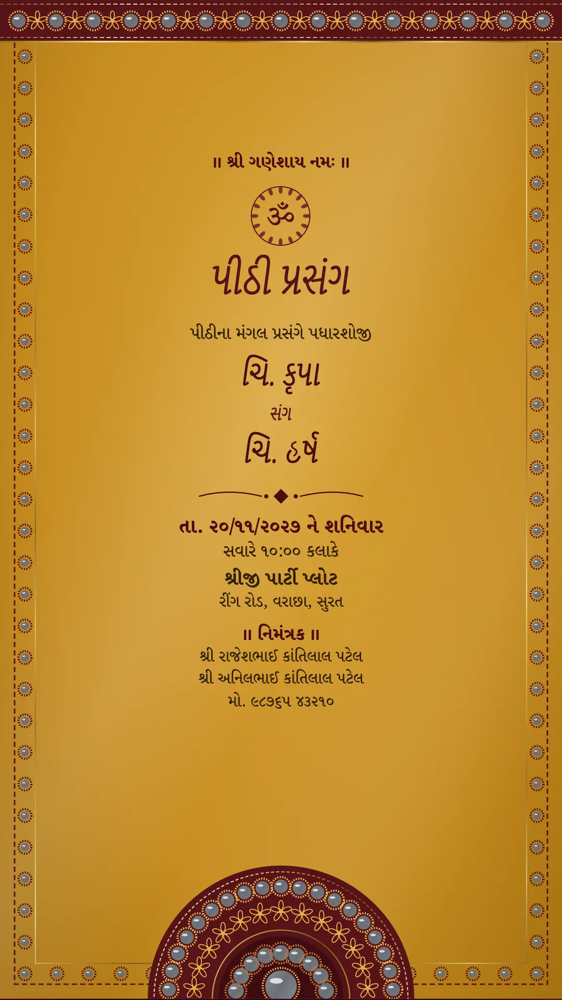

Designs › Haldi › Pithi Mirror Work
Pithi Mirror Work: Gujarati pithi (Haldi) invitation

- Ceremony: Haldi
- Language: Gujarati
- God or sacred symbol: Lord Ganesha
- Format: WhatsApp image (1080 x 1920 px) and 5 x 7 inch print PDF
- Pages: 1 (the invitation card)
About this design
The card is a warm mustard yellow with a soft glow in the upper half. A maroon band studded with round silver mirrors runs across the top. Down both sides runs a stitched border: tiny mirror dots set in gold rings on a maroon strip, edged with dashed gold lines like running stitches. At the bottom sits a half mandala in maroon, ringed with silver mirrors and small white and gold flowers, with a large silver mirror at its centre, after the mirror embroidery of Kutch.
The text is in maroon. It opens with ॥ શ્રી ગણેશાય નમઃ ॥ and a ringed Om emblem, then the heading પીઠી પ્રસંગ in large Farsan letters and the line પીઠીના મંગલ પ્રસંગે પધારશોજી. The names ચિ. કૃપા and ચિ. હર્ષ are joined by સંગ, and the date, the morning time સવારે ૧૦:૦૦ કલાકે, the venue and the નિમંત્રક block follow in Noto Serif Gujarati. The venue is a placeholder party plot in Surat, so change it to your home or hall.
It suits Gujarati Hindu families who want a separate card for the pithi, in a colour that matches the turmeric. It shares its names, Ganesha line and નિમંત્રક block with Garba Raas Night and Gulabi Kankotri, so the pithi, the garba night and the wedding can go out as one set. Haldi Kalash Saffron is the Hindi card for the same ceremony, in burnt saffron with a marigold bandhanwar and a brass kalash; Pithi Mirror Work is brighter and leans on embroidery rather than ritual objects.
Sample wording on this card
The card opens in the editor with this text. Change any line, or switch the card to another language.
॥ શ્રી ગણેશાય નમઃ ॥
પીઠી પ્રસંગ
પીઠીના મંગલ પ્રસંગે પધારશોજી
ચિ. કૃપા
સંગ
ચિ. હર્ષ
તા. ૨૦/૧૧/૨૦૨૭ ને શનિવાર
સવારે ૧૦:૦૦ કલાકે
શ્રીજી પાર્ટી પ્લોટ
રીંગ રોડ, વરાછા, સુરત
નિમંત્રક
શ્રી રાજેશભાઈ કાંતિલાલ પટેલ
શ્રી અનિલભાઈ કાંતિલાલ પટેલ
મો. ૯૮૭૬૫ ૪૩૨૧૦